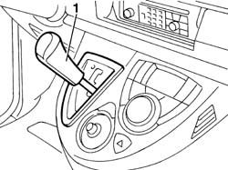
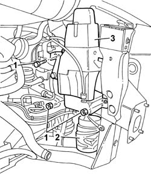
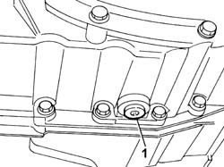
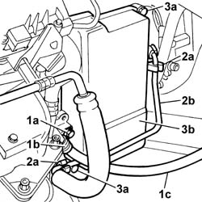
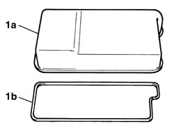
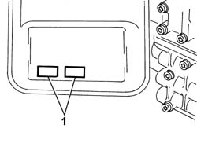
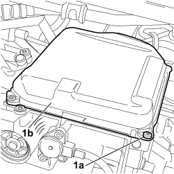

2130B36 AUTOMATIC TRANMISSION VALVE COVER R R
- Path
- Procedures > 21 GEARBOX UNIT > 2130 AUTOMATIC TRANSMISSION WITH DIFFERENTIAL > 2130B AUTOMATIC TRANSMISSION COMPONENTS > 2130B36 AUTOMATIC TRANMISSION VALVE COVER R R
- Kind
- repair procedure (removal / refitting; the operation number is the code)
- Applies to
- engines: 2.0 16v, 3.0 24V V6, 2.0 16V JTD; all production periods
- Interactive page
- https://sloeber94.github.io/elrnDB-fUlss/en/#/179007251
Applies to: engines: 3.0 24V V6; all production periods
 Removing
Removing
 Refitting
Refitting- Position the vehicle on the lift.
- Disconnect the negative battery terminal.
 | Description | Connector |
|---|---|---|
. | Battery |
Op. 5010B18 HEATING VENTILATION UNIT AIR INTAKE - R+R
Op. 1048A47 SLEEVE FROM RIGID PIPE TO THROTTLE BODY - R R
See descriptions
Op. 7055B54 UNDER ENGINE PROTECTION/GUARD - R.R.
Op. 2130A40 COOLANT SUPPLY PIPE TO AUTOMATIC TRANSMISSION FLUID HEAT EXCHANGER - R.R.
1. Place the gear lever in position (N).

Applies to: engines: 3.0 24V V6; all production periods
1. Undo the nuts and the bolt fixing the air filter casing mounting bracket.
2. Release the air filter casing flexible cold air intake pipe from the support.
3. Remove the air filter casing mounting bracket complete with mechanical vehicle lifting device.

Applies to: engines: 3.0 24V V6; all production periods
- Position a suitable container for collecting the transmission fluid.
1. Undo the plug and drain the automatic transmission fluid.

Applies to: engines: 3.0 24V V6; all production periods
1. Undo the fixing bolt (1a), detach the securing band (1b) and move the automatic transmission earth connecting cable (1c).
2. Release the power assisted steering box pump supply pipe (2b) from the securing clips (2a).
- Position a suitable container for collecting the transmission fluid.
3. Undo the fixing bolts (3a), remove the solenoid valve assembly cover (3b) and drain the remaining fluid into the container.

Applies to: engines: 3.0 24V V6; all production periods
Refitting
Removing1. Replace the solenoid valve assembly cover (1b) seal (1a).

Applies to: engines: 3.0 24V V6; all production periods
1. Before fitting the solenoid valve assembly cover, make sure that the magnets are correctly positioned as illustrated in the diagram below.

Applies to: engines: 3.0 24V V6; all production periods
- Position the solenoid valve assembly cover on the gearbox casing, tighten the fixing bolts and tighten to the recommended torque.
 | Value - daNm | Fastening | Component | Ø |
|---|---|---|---|---|
. | 6 | Bolts | AUTO TRANS SOLENOID VALVE COVER Replace |
- Screw in the automatic transmission fluid drain plug and tighten it to the recommended torque.
| Value - daNm | Fastening | Component | Ø |
|---|---|---|---|---|
. | 4,5 | Plug | AUTOMATIC TRANSMISSION FLUID - Change |
- Renew the supply pipe fromthe power assisted steering pump to the power assisted steering box on the securing clips.
- Position the automatic transmission earth connecting cable and tighten the securing band fixing bolt
- Position the air filter casing mounting bracket complete with mechanical vehicle lifting device and tighten the fixing nuts and bolt.
- Position the air filter casing flexible cold air intake pipe on the support.
Op. 2130A40 COOLANT SUPPLY PIPE TO AUTOMATIC TRANSMISSION FLUID HEAT EXCHANGER - R.R.
Op. 7055B54 UNDER ENGINE PROTECTION/GUARD - R.R.
See descriptions
Op. 1048A47 SLEEVE FROM RIGID PIPE TO THROTTLE BODY - R R
Op. 5010B18 HEATING VENTILATION UNIT AIR INTAKE - R+R
- Connect the negative battery terminal.
| Description | Connector |
|---|---|---|
. | Battery |
Op. 0010T45 AUTOMATIC TRANSMISSION FLUID CHECK LEVEL AND TOP UP IF NECESSARY
Op. 0010T21 ENGINE COOLANT - CHECK DENSITY AND CHANGE, IF NECESSARY
- Remove the vehicle from the lift.
Applies to: engines: 2.0 16v, 2.0 16V JTD; all production periods
Removing
Refitting- Position the vehicle on the lift.
- Turn the ignition key to the OFF position.
- Disconnect the negative battery terminal.
Description | Connector |
|---|---|
Battery | A001 |
Op. 1048A11 AIR CLEANER ASSEMBLY - R R FOR VERSIONS WITH AUTOMATIC TRANSMISSION
Op. 7055B54 UNDER ENGINE PROTECTION/GUARD - R.R.
Arrange a container to collect the fluid in the hydraulic block casing (1.5 litres).
1. Partly unscrew the bolts (1a), drain the fluid into the container, then fully unscrew the bolts and remove the solenoid cover (1b) from the automatic transmission.

Applies to: engines: 2.0 16v, 2.0 16V JTD; all production periods
Refitting
Removing- Position the automatic transmission solenoid valve assembly with a new gasket, tighten the fixing bolts and tighten to the recommended torque.
Value daNm | Fastening | Component | dia |
|---|---|---|---|
1,0 | Bolt | Automatic transmission solenoid cover fastening |
Op. 0010T45 AUTOMATIC TRANSMISSION FLUID CHECK LEVEL AND TOP UP IF NECESSARY
Op. 7055B54 UNDER ENGINE PROTECTION/GUARD - R.R.
Op. 1048A11 AIR CLEANER ASSEMBLY - R R FOR VERSIONS WITH AUTOMATIC TRANSMISSION
Connect the negative battery terminal.
Description | Connector |
|---|---|
Battery | A001 |
Topics linked from this page (7)
- 0010T21 ENGINE COOLANT - CHECK DENSITY AND CHANGE, IF NECESSARY
- 0010T45 AUTOMATIC TRANSMISSION FLUID CHECK LEVEL AND TOP UP IF NECESSARY
- 1048A11 AIR CLEANER ASSEMBLY - R R FOR VERSIONS WITH AUTOMATIC TRANSMISSION
- 1048A47 SLEEVE FROM RIGID PIPE TO THROTTLE BODY - R R
- 2130A40 COOLANT SUPPLY PIPE TO AUTOMATIC TRANSMISSION FLUID HEAT EXCHANGER - R.R.
- 5010B18 CLIMATE CONTROL UNIT AIR INTAKE - R.R.
- 7055B54 UNDER-ENGINE GUARD - R R